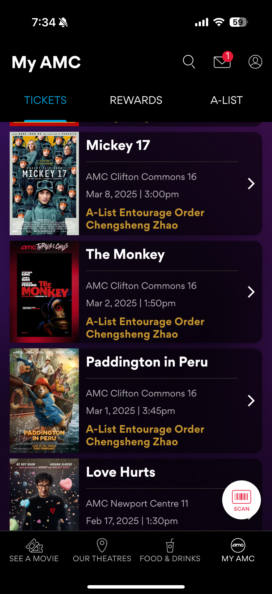
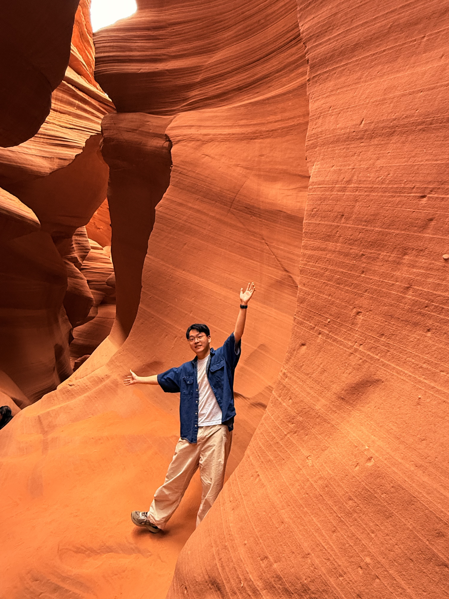
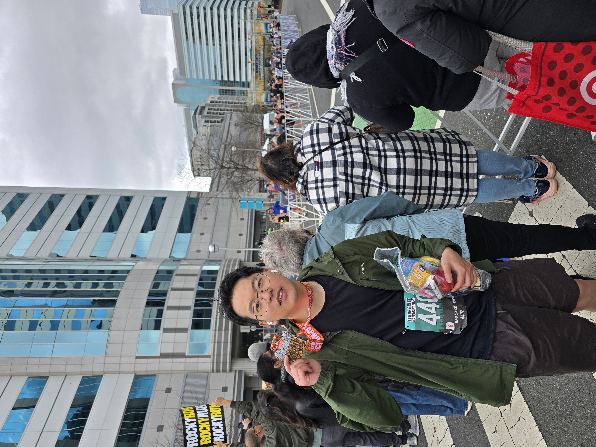
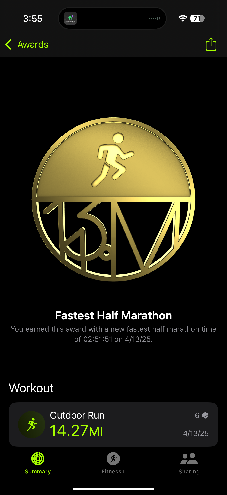
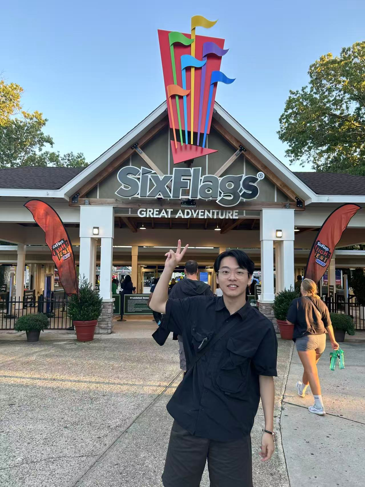
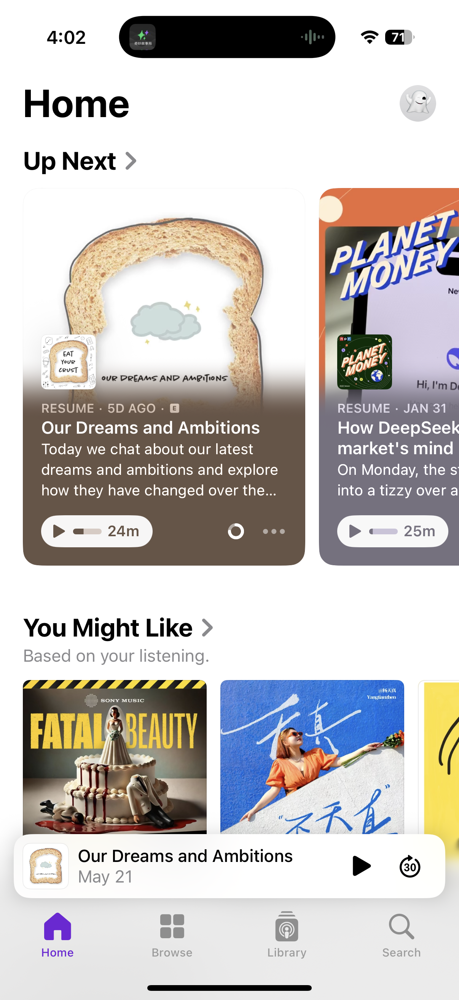
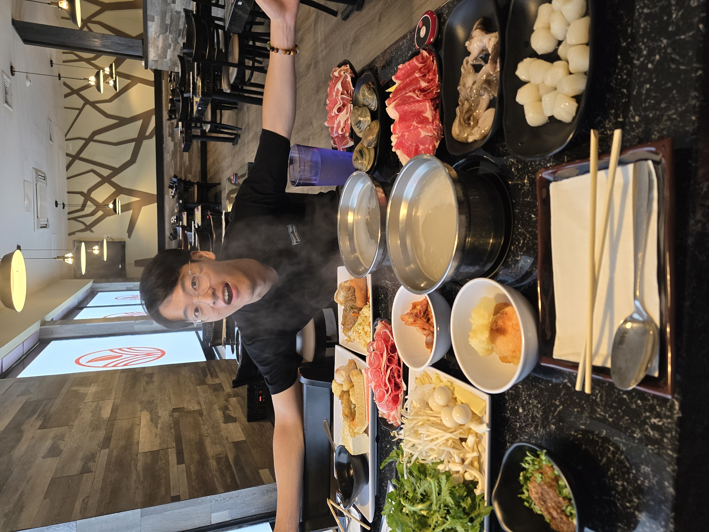
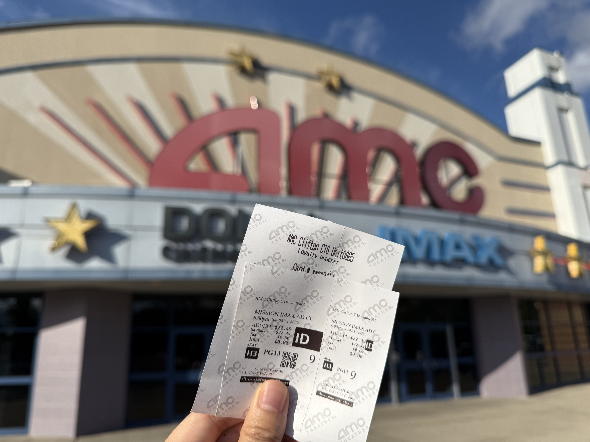
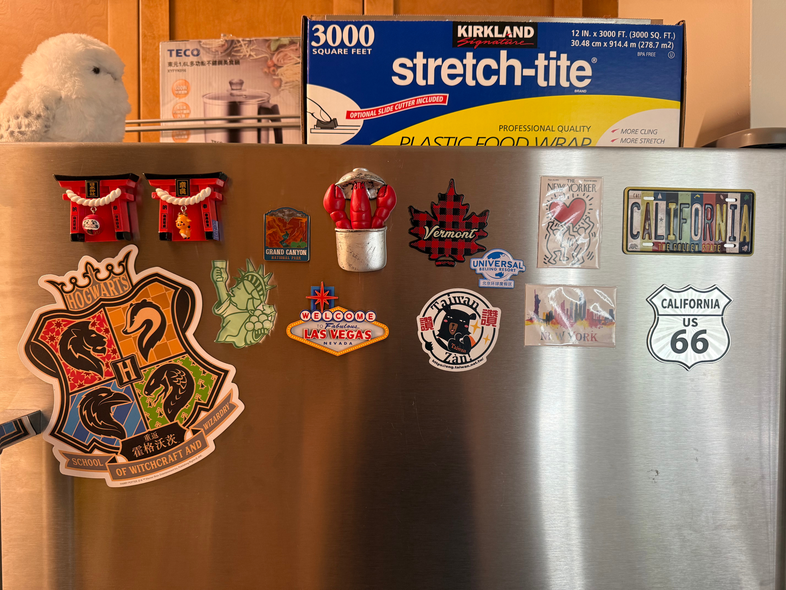

Hi, I’m Chengsheng!
A product designer who thrives on making sense of complexity.
Whether I’m mapping user journeys or prototyping interactions, I enjoy turning messy, real-world needs into designs that feel clear, honest, and grounded in reality.
My work often starts with questions — Who is this for? What might they actually need? How do they feel in this moment? — and grows through research, iteration, and quiet observation.
I care about making things that not only function well, but mean something.
Professional Experience
Offline Mode
Not just a designer — also a half-marathoner, AMC-lister, buffet destroyer, podcast addict, and thrill-seeker.





